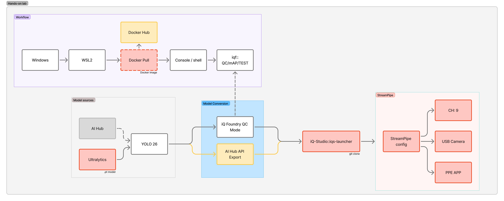
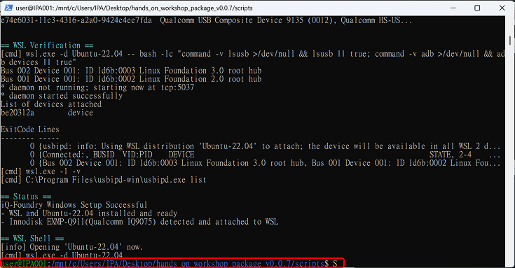

Qualcomm AI Hub × YOLO26：
BYOM 模型部署腳本。
Qualcomm AI Hub × YOLO26:
BYOM Deployment Script.
在 Windows 11 + WSL2 主機與 EXMP-Q911（Qualcomm QCS9075）裝置上，依序執行以下腳本即可完成 YOLO26 模型從 Float32 到 INT8 的完整裝置端部署——不需要手動輸入指令。 Run the scripts below in order on a Windows 11 + WSL2 host with an EXMP-Q911 (Qualcomm QCS9075) target to walk the full YOLO26 float32-to-INT8 on-device deployment flow — no manual command typing required.

開始前：你需要準備什麼Prerequisites: what you'll need
| 項目Item | 需求Requirement |
|---|---|
| Host | x86 Windows 11（建議 16 GB 以上記憶體）x86 Windows 11 (16 GB RAM or more recommended) |
| 目標裝置Target device | EXMP-Q911（Qualcomm QCS9075），以 USB-C 連接主機EXMP-Q911 (Qualcomm QCS9075), connected to the host via USB-C |
| 顯示器Display | Q911 需接上 DP 螢幕，用來觀看 9 路 streampipe demoDP monitor attached to the Q911 (to watch the 9-channel streampipe demo) |
| Qualcomm AI Hub | 個人 API token（aihub.qualcomm.com）Personal API token (aihub.qualcomm.com) |
| Host 網路internet | Step 1–3 一定需要（apt / Docker Hub）；Step 4、5.2 僅在選擇「連網」模式時才需要（AI Hub）——預設的「離線」模式不需要Always required for Steps 1–3 (apt / Docker Hub); Step 4 and 5.2 only need it if you pick "Online" mode (AI Hub) — the default "Offline" mode doesn't |
| Q911 網路internet | 僅在 Step 4 選擇「連網」模式且第一次執行時需要（自動下載 streampipe image，約 3 分鐘）；「離線」模式完全不需要Only needed on first run if you pick "Online" mode for Step 4 (auto-pulls the streampipe image, ~3 min); the "Offline" mode needs none |
套件結構：資料夾裡有什麼Package layout: what's in the package
| Path | 內容Contents |
|---|---|
| scripts/ | 逐步工作坊腳本（本頁的主要內容）Step-by-step workshop scripts (the main subject of this page) |
| github/iQ-Foundry/ | iQ-Foundry 原始碼（量化 qc / mAP / 裝置端測試）iQ-Foundry source (quantization qc / mAP / on-device test) |
| github/iQ-Studio/ | iQ-Studio 原始碼（裝置端 streampipe demo）iQ-Studio source (on-device streampipe demo) |
| export_qai_fp32/ | FP32 匯出用的 Dockerfile 與腳本Dockerfile and script for the FP32 export |
| iqf_save/ | 模型（yolo26n.pt）、校正圖片、COCO val2017 資料集、裝置端 venv tarball、預先量化好的 INT8 模型（Step 5.2 離線模式用）Models (yolo26n.pt), calibration images, COCO val2017 dataset, device venv tarball, a pre-quantized INT8 model (used by Step 5.2's offline mode) |
| iqs_config/ | streampipe 9 路 FP32 / INT8 設定檔streampipe 9-ch FP32 / INT8 config files |
| docker_images/ | 離線 Docker image tarballOffline Docker image tarballs |
| streampipe/ | 使用 streampipe 時所需要的資料Data needed when running streampipe |
| .agent/ | 如果自己有 Claude Code 或 Codex，可以照 README_AGENTIC 裡寫的方式試著操作看看If you have Claude Code or Codex, you can try it out following the instructions in README_AGENTIC |
| README / README_AGENTIC | 使用說明Usage instructions |
開始之前，建議先做一次最後檢查。在 scripts 資料夾裡雙擊執行 preinstall-check.bat，它會逐項確認 Windows/WSL2、Qualcomm USB Driver、套件與韌體資料夾、以及 WSL 內的 adb 是否都已就緒；還沒準備好的項目，會直接告訴你該怎麼補上，照著做就好。Before you start, we recommend one final check. Double-click preinstall-check.bat in the scripts folder — it checks item by item that Windows/WSL2, the Qualcomm USB Driver, the package and firmware folders, and adb inside WSL are all ready, and for anything that isn't, it tells you exactly how to fix it.
執行後會逐項檢查下表，全部出現綠色 PASS 就好。It runs through the checks below — you're good once every line shows a green PASS.
檢查項目表What it checks
| # | 檢查項Check | 沒過時If it fails |
|---|---|---|
| 1 | Windows 版本支援 WSL2Windows version supports WSL2 | 到 Windows Update 更新Update via Windows Update |
| 2 | WSL2 + Ubuntu-22.04 | 自動安裝Auto-installed |
| 3 | Qualcomm USB Driver | 安裝官方 QUD 安裝包Install the official QUD package |
| 4 | usbipd-win | 自動安裝Auto-installed |
| 5 | 套件資料夾（檔案齊全、大小正確）Package folder (all files present, right size) | 重新下載，放到 C:\iq_workshop 底下Re-download and place under C:\iq_workshop |
| 6 | 韌體 image 資料夾（檔案齊全、大小正確）Firmware image folder (all files present, right size) | 重新下載或解壓縮韌體 zipRe-download or re-extract the firmware zip |
| 7 | WSL 裡的 adbadb inside WSL | 自動安裝Auto-installed |
Windows 主機設定Windows Host Setup
WIN-PS
以系統管理員開啟 Windows PowerShell（開始 → 搜尋 PowerShell → 右鍵 → 以系統管理員身分執行），切換到套件的 scripts 資料夾：
Open Windows PowerShell as Administrator (Start → search for PowerShell → right-click → Run as administrator), then change into the package's scripts folder:
cd (Get-ChildItem "C:\iq_workshop" -Directory -Recurse -ErrorAction SilentlyContinue | Where-Object { $_.FullName -like "*hands_on_workshop_package*\scripts" } | Select-Object -First 1 -ExpandProperty FullName)執行 Windows 端的設定腳本（約需 5–10 分鐘）： Run the Windows-side setup script (takes about 5–10 minutes):
powershell -ExecutionPolicy Bypass -File .\setup-windows-wsl.ps1此腳本會安裝並設定 WSL2 Ubuntu-22.04、啟用 systemd，並透過 usbipd 把 EXMP-Q911 的 USB 裝置掛進 WSL。過程需要互動： The script installs and configures WSL2 Ubuntu-22.04, enables systemd, and attaches the EXMP-Q911 USB device into WSL via usbipd. The setup is interactive:
- Windows 詢問是否繼續時，回答
Y或Yes。When Windows asks whether to continue, answerYorYes. - 若是第一次初始化 Ubuntu-22.04，出現提示時請建立 WSL 帳號（設定使用者名稱與密碼）。If Ubuntu-22.04 is being initialized for the first time, create the WSL account when prompted (set a username and password).
完成後會自動開啟一個 WSL Ubuntu 終端機。之後所有步驟都在 WSL 內執行。When it finishes, a WSL Ubuntu terminal opens automatically. All remaining steps run inside WSL.
成功畫面Success screen
如果看到藍色和綠色的文字，就代表你已經成功進入 WSL。If blue and green text is displayed, you have successfully entered WSL.

安裝 adb，確認 Q911 連線Install adb, check Q911 connection
HOST · 約 1 分鐘~1 min
用 apt 安裝 adb；adb devices 應該會列出 EXMP-Q911。
Install adb via apt; adb devices should list EXMP-Q911.
./step_1.sh說明：透過 adb，直接連線 Q911 進行操作。Note: adb connects directly to the Q911 so you can operate it.
adb devices 沒看到 Q911？檢查 USB-C 線是否插好、Step 0 的 usbipd USB passthrough 是否完成；必要時回到 Step 0 重新執行一次 setup-windows-wsl.ps1。adb devices doesn't list the Q911? Check that the USB-C cable is seated and that the usbipd USB passthrough from Step 0 completed; go back and rerun setup-windows-wsl.ps1 if needed.
成功訊息Success message
[Step 1/4] DONE Directory [Step 2/4] DONE Package index updated [Step 3/4] DONE adb installed [Step 4/4] DONE adb device check finished All steps completed successfully!
安裝 Docker，取得 iQ-Foundry imageInstall Docker, get iQ-Foundry image
HOST · 數分鐘a few min
安裝 Docker Engine，pull innodiskorg/iqf:latest。
Install Docker Engine, pull innodiskorg/iqf:latest.
./step_2.sh說明：Docker 中已經包含完整的量化與轉換工具。Note: Docker already includes the complete quantization and conversion toolset.
成功訊息Success message
[Step 1/4] DONE Directory [Step 2/4] DONE Docker installed [Step 3/4] DONE Image loaded [Step 4/4] DONE Image verified All steps completed successfully!
登入 Qualcomm AI HubLog in to Qualcomm AI Hub
Step 4.1、5.2 會用到這個登入；若走離線模式則不需要。 Steps 4.1 and 5.2 rely on this login; not needed if you're using offline mode.
— · 不需要not needed
離線模式完全不會連上 Qualcomm AI Hub，這一步沒有任何指令要跑 —— 直接前往下一步。Offline mode never talks to Qualcomm AI Hub, so there's nothing to run here — go ahead and move on to the next step.
HOST · 幾秒seconds
登入 Qualcomm AI Hub 並驗證 token（需要帶入 API key 參數）。 Log in to Qualcomm AI Hub and verify the token (API key argument required).
./step_3.sh <YOUR_QAI_HUB_API_KEY>把 <YOUR_QAI_HUB_API_KEY> 換成你自己在 aihub.qualcomm.com 取得的個人 API token。請刪除 < >。Replace <YOUR_QAI_HUB_API_KEY> with your own personal API token from aihub.qualcomm.com. Please remove the < > brackets.
成功訊息Success message
[Step 1/3] DONE Directory [Step 2/3] DONE Login submitted [Step 3/3] DONE Login verified All steps completed successfully!
推送 FP32 bundle，執行 FP32 streampipe 9chPush the FP32 bundle, run FP32 streampipe 9ch
Q911 · 約 3 分 45 秒~3 min 45 sec
不需要 host 或 Q911 連網：直接使用套件內附、已經匯出好的 FP32 bundle（模型 + streampipe image tarball），推送並安裝到 Q911，啟動 FP32 streampipe 9ch。 No internet needed on the host or the Q911: uses the pre-built FP32 bundle included in the package (model + streampipe image tarball), pushes and installs it on the Q911, and starts FP32 streampipe 9ch.
./step_4_offline.sh腳本會在 Q911 螢幕顯示即時 9 路推論畫面，完成後按 Ctrl+C 即可，腳本會自動清除裝置上殘留的 streampipe container。The script shows a live 9-channel inference grid on the Q911's monitor — press Ctrl+C when done; it automatically cleans up any leftover streampipe container on the device.
畫面出現後，就可以接上相機。Once the screen appears, you can connect the camera.
成功訊息Success message
[Step 1/4] DONE Directory [Step 2/4] DONE Bundle pushed to /data/local/tmp/streampipe [Step 3/4] DONE Bundle verified [Step 4/4] DONE FP32 streampipe stopped All steps completed successfully!
HOST · AI Hub · 約 1–2 分鐘~1–2 min
4.1 建置 iqf-aihub image，匯出 YOLO26 FP32 TFLite 模型。
4.1 Build the iqf-aihub image, export YOLO26 FP32 TFLite.
./step_4_1.sh產出：Output: iqf_save/models/qualcomm_ai_hub_fp32/yolo26_det-tflite-float/yolo26_det.tflite
成功訊息Success message
[Step 1/4] DONE Directory [Step 2/4] DONE Image built [Step 3/4] DONE Export finished [Step 4/4] DONE FP32 model All steps completed successfully!
前往 Qualcomm AI Hub 以檢視模型狀況Visit Qualcomm AI Hub to view model status

FP32 tflite 怎麼匯出的？How is the FP32 tflite exported?
step_4_1.sh 內部使用 Qualcomm AI Hub API 匯出 FP32 tflite：step_4_1.sh exports the FP32 tflite under the hood using the Qualcomm AI Hub API:
python -m qai_hub_models.models.yolo26_det.exportQ911 · 首次執行first run · 首次約 3 分鐘~3 min first run
4.2 把 iQ-Studio 推送並安裝到 Q911，啟動 FP32 streampipe 9ch。 4.2 Push and install iQ-Studio on Q911, start FP32 streampipe 9ch.
./step_4_2.sh第一次執行需要 Q911 能連上網路（自動下載 streampipe image，約 3 分鐘）。腳本會在 Q911 螢幕顯示即時 9 路推論畫面，完成後按 Ctrl+C 即可，腳本會自動清除裝置上殘留的 streampipe container。The Q911 needs internet access on first run (auto-pulls the streampipe image, ~3 min). The script shows a live 9-channel inference grid on the Q911's monitor — press Ctrl+C when done; it automatically cleans up any leftover streampipe container on the device.
畫面出現後，就可以接上相機了（現場會提供相機）。Once the screen appears, you can connect the camera (a camera will be provided on-site).
Q911 沒有網路？切換到上方的「離線」頁籤，改用 Step 4 的離線模式。No internet on the Q911? Switch to the "Offline" tab above and use Step 4's offline mode instead.
成功訊息Success message
[Step 1/5] DONE Directory [Step 2/5] DONE iQ-Studio pushed [Step 3/5] DONE iQ-Studio installed [Step 4/5] DONE Model and config pushed [Step 5/5] DONE FP32 streampipe stopped All steps completed successfully!
測試 FP32 tflite 在 Q911 上運行的效果，記得注意 FPS。Check how the FP32 tflite performs on the Q911 — keep an eye on the FPS.
環境設置與檢查Environment Setup & Check
離線Offline · 數分鐘a few minutes
在 Q911 上進行環境設置與檢查；過程中會執行 adb kill-server，把 USB 讓給 iQ-Foundry container 內的 adb 使用。
Sets up and checks the runtime environment on the Q911; along the way it runs adb kill-server to hand the USB over to the adb inside the container.
./step_5_1.sh說明：What this does:
- 確認 Q911 連得到 adb。 Confirms adb can reach the Q911.
- 設置 Q911 上的 Python venv，並檢查套件能正常匯入。 Sets up the Python venv on the Q911, and checks that its packages import correctly.
- 確認等一下要用的 docker image 跟檔案都準備好了。 Confirms the docker image and files needed for the next steps are ready.
成功訊息Success message
[Step 1/4] DONE Directory [Step 2/4] DONE Tarball pushed [Step 3/4] DONE venv deployed [Step 4/4] DONE adb server killed All steps completed successfully!
取得 INT8 模型Get the INT8 model
HOST · 數秒A few seconds
不需要連上 AI Hub，也不需要下載任何東西：直接把套件內預先量化好的 INT8 模型複製到輸出路徑。 No AI Hub connection or downloads needed: copies the pre-quantized INT8 model already included in the package to the output path.
./step_5_2_offline.sh產出：Output: github/iQ-Foundry/out/model/yolov26/yolov26_int8.tflite
成功訊息Success message
[Step 1/3] DONE Directory [Step 2/3] DONE INT8 model placed [Step 3/3] DONE All steps completed successfully!
HOST · AI Hub · 約 5–9 分鐘~5–9 min
qc 量化流程：YOLO26 .pt → INT8 .tflite。
qc quantization: YOLO26 .pt → INT8 .tflite.
./step_5_2.sh產出：Output: github/iQ-Foundry/out/model/yolov26/yolov26_int8_<timestamp>.tflite
成功訊息Success message
[Step 1/3] DONE Directory [Step 2/3] DONE Quantization finished [Step 3/3] DONE
mAP 比較：FP32 vs INT8mAP comparison (FP32 vs INT8)
離線Offline · 數分鐘a few min
比較 FP32 與 INT8 模型的 mAP（--max-images 50）。
Compare FP32 vs INT8 mAP (--max-images 50).
-
執行腳本：執行
./step_5_3.sh進行 mAP 評估。 Run the script: Execute./step_5_3.shto run the mAP evaluation.bash./step_5_3.sh -
查看結果：完成後，可以到
github/iQ-Foundry/out/mAP/yolo26/查看結果。 View the results: Once complete, you can view the results atgithub/iQ-Foundry/out/mAP/yolo26/.
成功訊息Success message
[Step 1/3] DONE Directory [Step 2/3] DONE All steps completed successfully!
iQ-Foundry 裝置端測試iQ-Foundry on-device test
離線Offline · 數十秒tens of seconds
透過 adb 在 Q911 上執行 INT8 推論。 Run INT8 inference on the Q911 via adb.
-
查看輸入圖片：先看一下
iqf_save/test/images/裡的圖片。 View input images: Check the images iniqf_save/test/images/. -
執行腳本：執行
./step_5_4.sh（如下方指令）。 Run the script: Execute./step_5_4.sh(below).bash./step_5_4.sh -
查看輸出圖片：到
github/iQ-Foundry/out/test/yolov26/看產生的結果，跟輸入圖片比對。 View output images: Check the generated results ingithub/iQ-Foundry/out/test/yolov26/and compare them against the input images.
產出：Output: github/iQ-Foundry/out/test/yolov26/
成功訊息Success message
[Step 1/3] DONE Directory [Step 2/3] DONE [Step 3/3] DONE Results All steps completed successfully!
iqf 實際執行的 commandThe command iqf actually runs
python3 docker/iqf run test \
--type yolov26 --runtime litert --precision int8 \
--model <out/model/yolov26/*.tflite> \
--yaml iqf_save/test/coco.yaml \
--images iqf_save/test/images \
--adb執行 INT8 streampipe 9chRun INT8 streampipe 9ch
Q911 · 約 40 秒~40 sec
不需要連網：直接使用套件內附的離線 INT8 bundle（模型 + streampipe 設定檔），推送到 Q911 並啟動 INT8 streampipe 9ch。 No internet needed: uses the offline INT8 bundle included in the package (model + streampipe config), pushes it to the Q911, and starts INT8 streampipe 9ch.
./step_5_5_offline.sh同樣會在 Q911 螢幕顯示即時 9 路畫面，完成後按 Ctrl+C。腳本會執行 adb start-server，把 host 端的 adb 恢復。Again shows a live 9-channel grid on the Q911's monitor — press Ctrl+C when done. The script runs adb start-server to restore host-side adb.
成功訊息Success message
[Step 1/4] DONE Directory [Step 2/4] DONE Bundle already present on Q911, skip push [Step 3/4] DONE Bundle verified [Step 4/4] DONE INT8 streampipe stopped All steps completed successfully!
Q911 · 幾秒seconds
推送 INT8 模型與設定檔，啟動 INT8 streampipe 9ch。 Push the INT8 model and config, start INT8 streampipe 9ch.
./step_5_5.sh同樣會在 Q911 螢幕顯示即時 9 路畫面，完成後按 Ctrl+C。腳本會執行 adb start-server，把 host 端的 adb 恢復。Again shows a live 9-channel grid on the Q911's monitor — press Ctrl+C when done. The script runs adb start-server to restore host-side adb.
成功訊息Success message
[Step 1/4] DONE Directory [Step 2/4] DONE [Step 3/4] DONE Model and config pushed [Step 4/4] DONE INT8 streampipe stopped All steps completed successfully! Workshop pipeline finished.
跟前面 FP32 那次的畫面比一下 FPS。Compare the FPS against the earlier FP32 run.
正確關閉 WSLProperly shut down WSL
WSL · 幾秒seconds
Step 5.5 的 INT8 streampipe 跑完、按 Ctrl+C 之後，畫面會停留在 WSL 裡面。離開前，先退出 WSL，再關閉它：
After Step 5.5's INT8 streampipe finishes and you press Ctrl+C, you'll be left inside the WSL shell. Before wrapping up, exit WSL and then shut it down:
exit回到 PowerShell 後，執行以下指令，若尚未回到 PowerShell，請再輸入 exit 直到成功退回。 Once back in Windows PowerShell, run the following command. If you are not back in PowerShell yet, enter exit repeatedly until you successfully exit.
wsl --shutdown執行完 wsl --shutdown 後，就可以關閉 PowerShell 視窗了——整個工作坊流程到這裡結束，辛苦了！Once wsl --shutdown finishes, you can close the PowerShell window — that wraps up the whole workshop flow. Nice work!